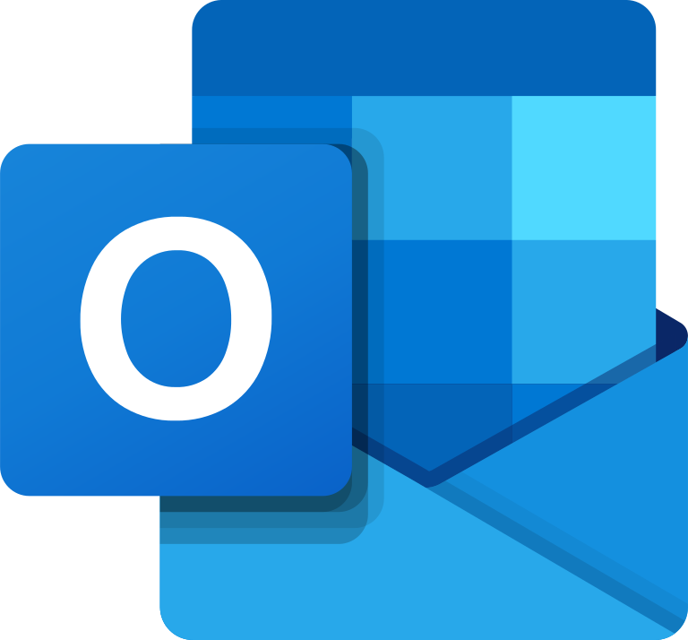
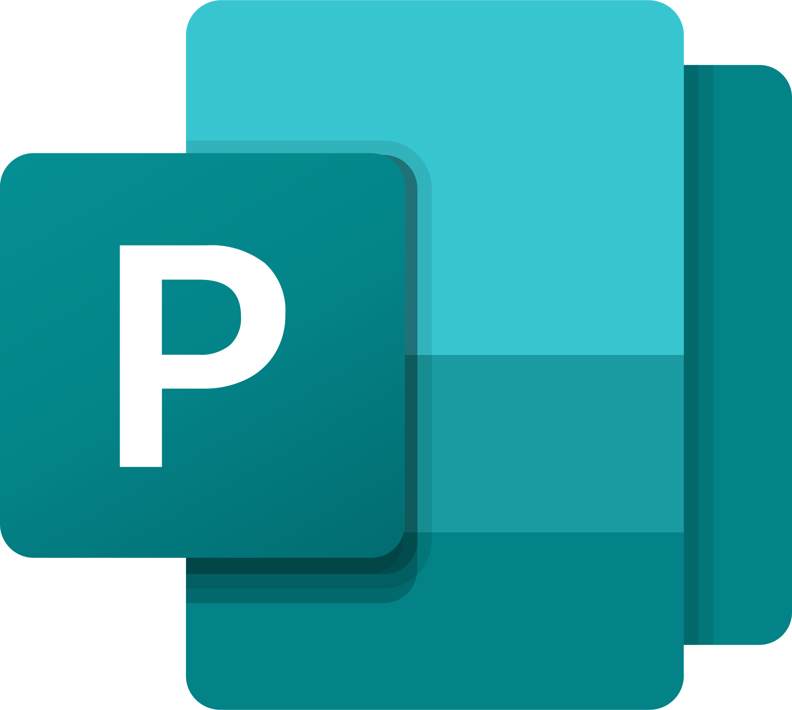
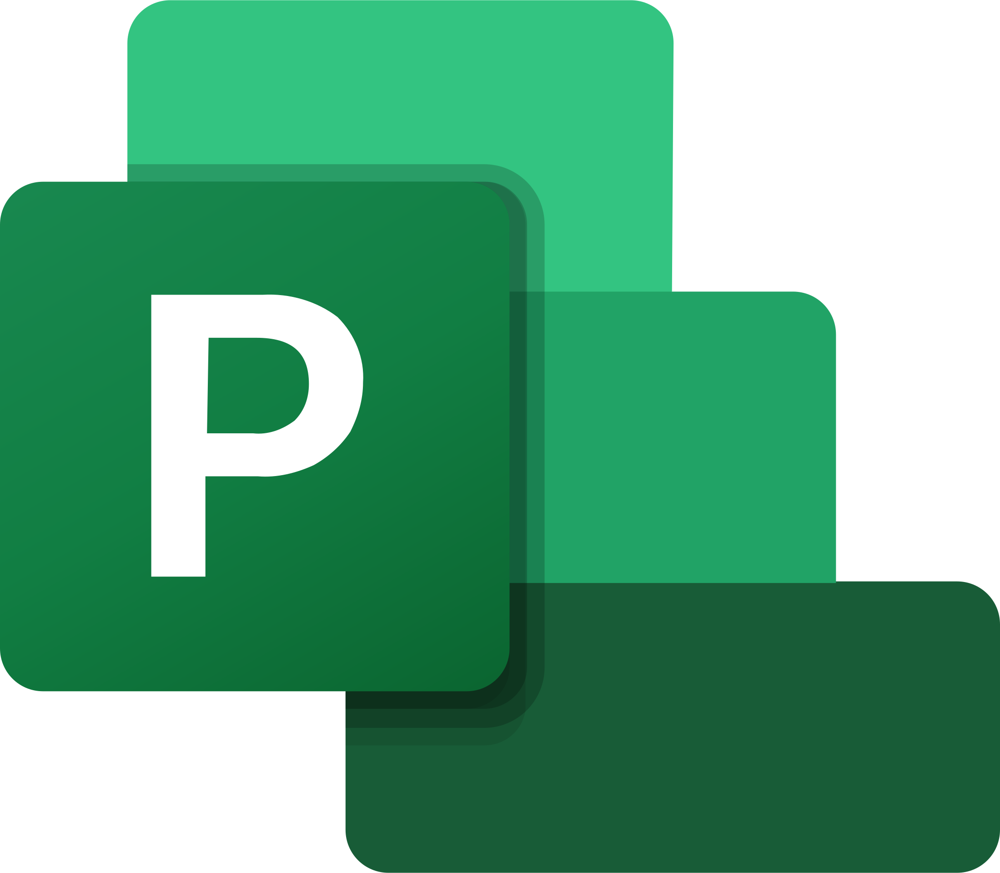
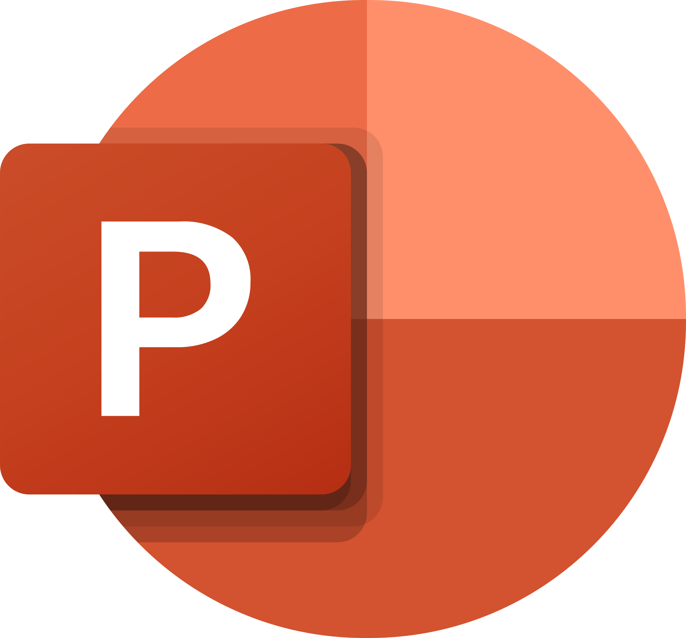
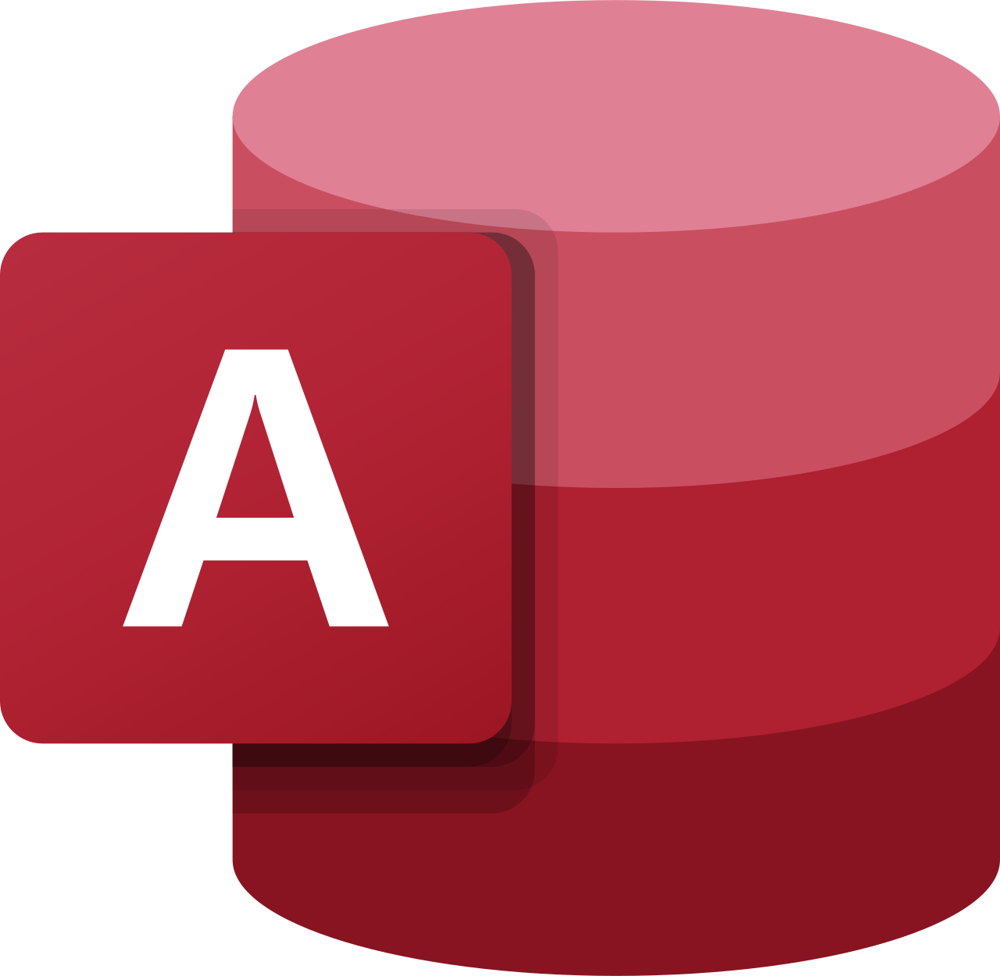

下载链接
点我下载
Outlook

Microsoft Outlook是微软办公软件套装的组件之一，它对Windows自带的Outlook express的功能进行了扩充。Outlook的功能很多，可以用它来收发电子邮件、管理联系人信息、记日记、安排日程、分配任务。最新版为Outlook 2021。
Visio

Microsoft Visio是Windows操作系统下运行的流程图和矢量绘图软件，它是Microsoft Office软件的一个部分。
Word
Microsoft Word是微软公司的一个文字处理器应用程序。它最初是由Richard Brodie为了运行DOS的IBM计算机而在1983年编写的。随后的版本可运行于Apple Macintosh (1984年)、SCO UNIX和Microsoft Windows (1989年)，并成为了Microsoft Office的一部分。
Publisher

Microsoft Publisher是微软公司发行的桌面出版应用软件。它常被人们认为是一款入门级的桌面出版应用软件，它能提供比Microsoft Word更强大的页面元素控制功能，但比起专业的页面布局软件来，还略逊一筹。Microsoft Office 365 中包括了最新版本的 Publisher 。
Project

Microsoft Project（或MSP）是由微软开发销售的项目管理软件程序。软件设计目的在于协助项目经理发展计划、为任务分配资源、跟踪进度、管理预算和分析工作量。
Excel
Microsoft Excel是Microsoft为使用Windows和Apple Macintosh操作系统的电脑编写的一款电子表格软件。直观的界面、出色的计算功能和图表工具，再加上成功的市场营销，使Excel成为最流行的个人计算机数据处理软件。
PowerPoint

Microsoft PowerPoint是指微软公司的演示文稿软件。用户可以在投影仪或者计算机上进行演示，也可以将演示文稿打印出来，制作成胶片，以便应用到更广泛的领域中。利用Microsoft Office PowerPoint不仅可以创建演示文稿，还可以在互联网上召开面对面会议、远程会议或在网上给观众展示演示文稿。
Access

Microsoft Access是由微软发布的关系数据库管理系统。它结合了 MicrosoftJet Database Engine 和 图形用户界面两项特点，是 Microsoft Office 的系统程序之一。